今日速览（30 秒版）
- 蔚来第三代ES8交付量近16万辆，距上一里程碑约1个月
- 新款大众安徽与众06/07上市，起售价9.99万元
- 奕境X9纯电版预计11月亮相，搭载宁德时代电池
- 北京现代全新伊兰特申报，长4765mm，轴距2750mm
- 大众ID. AURA L5可选装激光雷达，配备掀背尾门
- 新阿维塔06上市，增程版限时价20.59万元起
- 一汽-大众探歌L轴距加长50mm，搭载1.4T/1.5T发动机
- 吉利星瑞L PLUS限时售价10.97-14.37万元
- 阿维塔06焕新上市，限时权益价20.59万起
- 智界RX售25.98万起，10月25日开启首批交付
今日头条
岚图制动踏板标准超国标50%
10月10日，四部门联合发布《关于进一步加强汽车产品创新设计和研发测试验证有关管理工作的通知（征求意见稿）》，明确自2027年1月1日起，新申报产品应完成综合可靠性与耐久性、结构可靠性、软件功能可靠性、环境适应性等方面测试验证，其中可靠性验证试验不低于3万公里。岚图汽车在制动踏板标准上已将载荷提至3000N，比国标水平高出50%。现行国标规定制动踏板承载2000N纵向静态载荷不失效，而岚图采用多层高强度钢板主梁、IPB2.0集成线控制动与RBU双独立液压备份共同支撑的双硬件保险，确保制动踏板在极端情况下仍能保持安全。新规的出台意味着汽车行业将从“拼速度”转向“拼底线”，岚图通过远超同行的测试体系，为行业树立了“央企样本”。
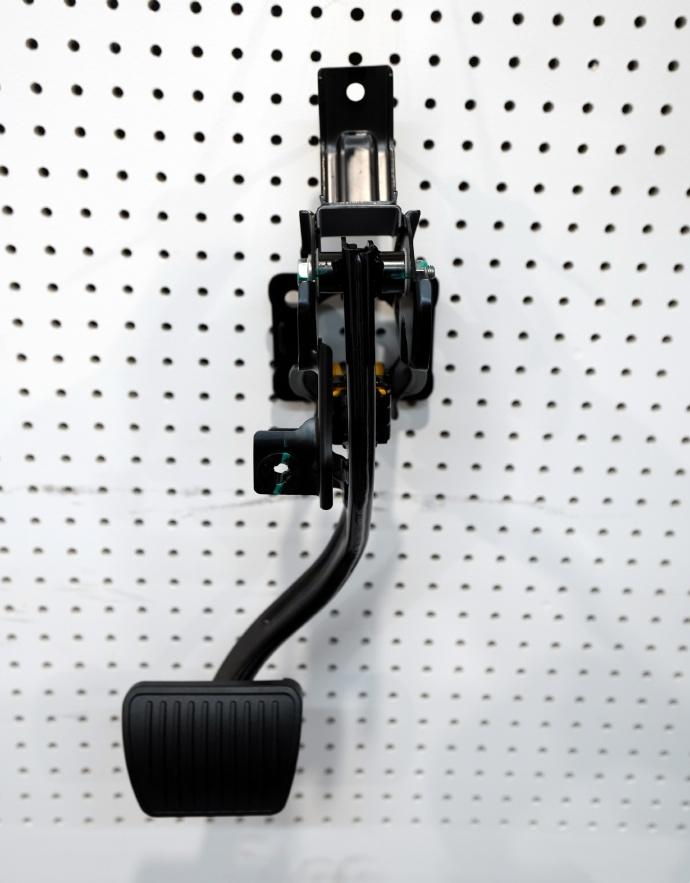
一、新车与产品
蔚来Firefly将推60度电池包 10月23日上市
蔚来汽车将于10月23日推出Firefly车型的60-kWh电池包，该电池包的CLTC续航里程为560公里。目前Firefly仅提供42.1-kWh电池包。此次升级将提升Firefly的续航能力，满足消费者对更长续航里程的需求。此前，Firefly的续航表现相对有限，此次新电池包的推出或将增强其在市场竞争中的优势。此举意味着蔚来正在持续优化产品性能，以应对日益激烈的市场竞争。（来源：CnEVPost）
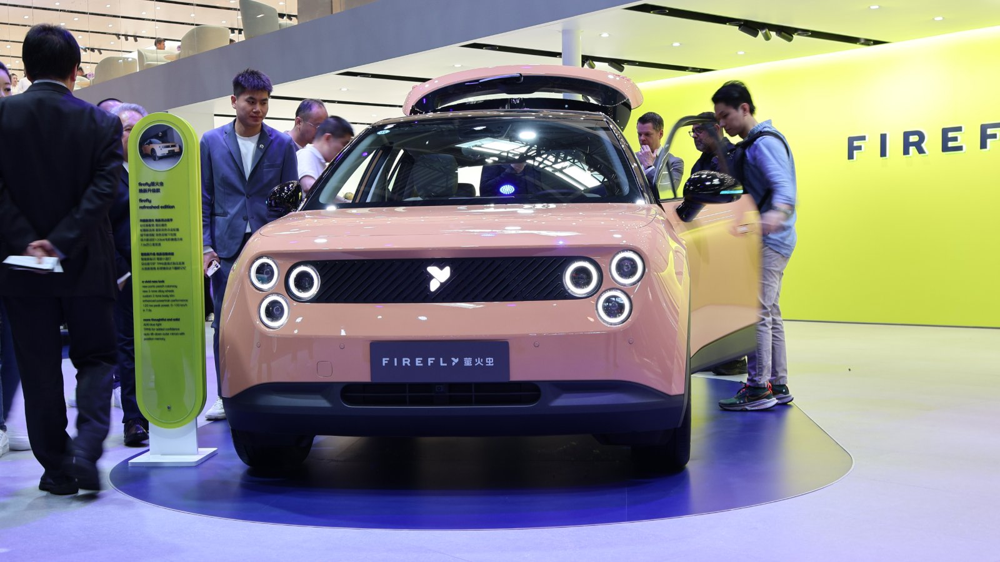
全新一代比亚迪汉申报图曝光 尺寸比汉L更大
全新一代比亚迪汉在工信部申报信息中亮相，新车共推出四款车型，包括三款纯电和一款插混。新车长宽高为5156/1969/1507mm，轴距3030mm，尺寸比在售的汉L更大。此次申报的新车尺寸恰好落在汉L与大汉之间，比汉L整体长出一圈，又比大汉短100mm。新车纯电部分提供245kW后驱、300kW后驱以及200+320kW四驱三种动力，插混版搭载1.5L发动机与200kW驱动电机。此举意味着比亚迪正在通过尺寸和动力的升级，进一步巩固其在中大型轿车市场的地位。（来源：汽车之家）
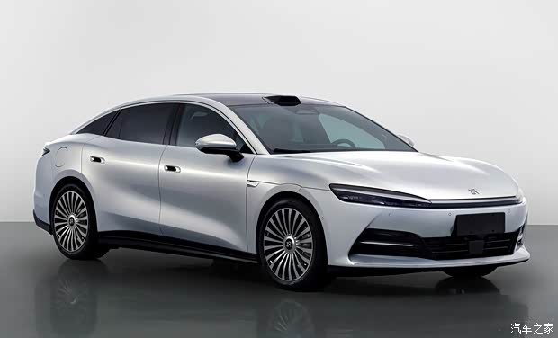
比亚迪第三代秦PLUS官图发布 轴距2800mm
比亚迪第三代秦PLUS官图发布，新车轴距达到2800mm，尺寸相比现款增加82mm，接近传统中型轿车门槛。新车搭载激光雷达和高阶辅助驾驶系统，预计10月下旬上市。外观采用最新的家族式设计语言，车头采用“鲨鱼鼻”造型，车身侧面采用溜背式车顶线与前低后高的腰线组合，车尾保留“流光瑞结”贯穿尾灯。动力方面，第三代秦PLUS DM-i搭载1.5L自然吸气发动机与电机组成的插混系统，电池为磷酸铁锂，容量分别为16.227kWh和24.337kWh，对应的WLTC纯电续航为107km和160km。此举意味着比亚迪正在通过尺寸和智能配置的升级，进一步提升秦PLUS在紧凑型车市场的竞争力。（来源：太平洋汽车）
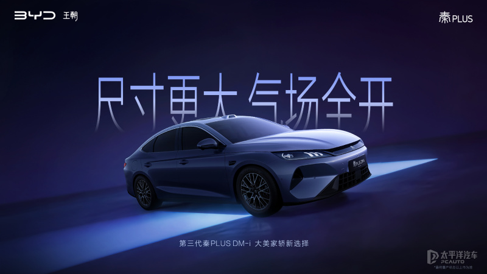
比亚迪第二代海鸥10月20日上市 设计和智能化全面升级
比亚迪第二代海鸥将于10月20日正式上市，新车在设计和智能化方面进行全面升级。作为比亚迪海鸥系列的全新力作，第二代海鸥延续了该系列的高性价比优势，并在外观、内饰以及智能配置上进行了多项优化。此次升级主要集中在智能化体验上，包括更先进的车机系统和更丰富的智能驾驶辅助功能。此前，比亚迪海鸥系列凭借出色的续航能力和亲民的价格，已在市场中获得良好口碑。此次第二代海鸥的推出，将进一步巩固比亚迪在新能源汽车市场的竞争力。（来源：易车）
比亚迪新款唐EV发布 搭载690马力双电机和双30英寸屏幕
比亚迪新款唐EV正式发布，该车型搭载双电机系统，综合功率达到690马力，并配备双30英寸屏幕，内饰设计极具科技感。作为比亚迪的旗舰五座电动SUV，新款唐EV在动力和智能化配置上实现了全面升级，进一步强化了其在高端电动SUV市场的竞争力。此前，比亚迪唐系列已凭借出色的性能和智能化配置，成为市场中的热门车型。此次新款唐EV的发布，标志着比亚迪在高端电动SUV领域的进一步布局，也为其在新能源汽车市场中的领先地位提供了有力支撑。（来源：Electrek）
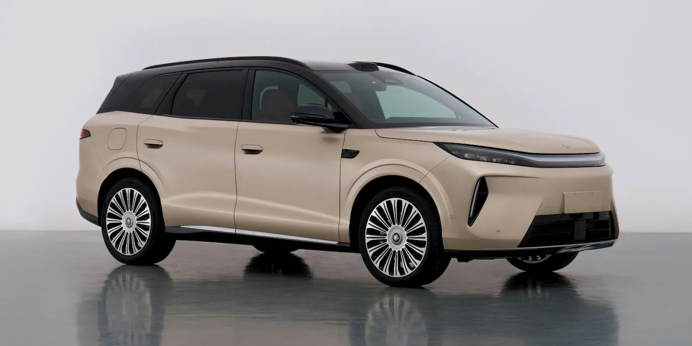
比亚迪新一代汉车长加长16厘米 纯电+插混双版本上市
比亚迪新一代汉正式申报，新车车长达到5156毫米，相比现款增加了16.1厘米，轴距也提升至3030毫米。新车提供3款纯电版和1款插混版，其中纯电版最高综合功率达520千瓦，最高车速270公里/小时，插混版搭载1.5升自然吸气发动机，匹配200千瓦后置驱动电机，最高车速200公里/小时。新一代汉在外观设计上采用低趴修长的线条，配备激光雷达模块，进一步提升了智能化水平。此前，比亚迪汉系列已在市场中取得不俗成绩，此次新一代汉的推出，将进一步巩固其在中大型轿车市场的地位。（来源：网上车市）
阿维塔07L增程版申报信息公布
10月18日，阿维塔07L增程版的申报信息在工信部最新一期目录中公布。新车定位中大型SUV，搭载华为乾崑智驾ADS5系统，基于WEWA 2.0架构。车身尺寸为4910/1980/1650mm，轴距2990mm，相比现款阿维塔07，车长和轴距均有明显提升。动力方面，新车搭载1.5T涡轮增压增程器，提供后驱单电机和高性能三电机两种方案，高配电池版本CLTC纯电续航最高可达340km。此前，阿维塔07L在8月份上市三款纯电车型，售价为22.99-27.99万元。此次增程版的推出，进一步丰富了产品线，满足更多消费者需求。（来源：太平洋汽车）
捷途旅行者7上市售价12.59-16.59万元
2026年10月14日，捷途旅行者7正式上市，燃油版车型焕新价为12.59-16.59万元，C-DM插混版车型焕新价为14.39-16.39万元。新车延续旅行者家族标志性方盒子造型，换装复古圆灯设计，配备15.6英寸2.5K多媒体屏幕，升级8255芯片，内置TOUR OS 4.0智能座舱。插混版搭载1.5TD发动机+电机动力组合，CLTC纯电续航245km，综合续航1400km。此前，捷途旅行者系列已有多款车型上市，此次旅行者7的推出，进一步完善了产品矩阵，增强了品牌在SUV市场的竞争力。（来源：新浪汽车·新车）
二、销量与市场
方程豹累计销量突破60万辆
10月18日，方程豹汽车官方宣布，品牌累计销量正式突破60万辆，成为增速最快的新势力品牌。方程豹自2023年6月成立以来，从零开创电驱越野新品类，目前完成豹、钛、方程、皮卡多序列布局。在新能源市场承压的背景下，方程豹35个月突破60万销量，50万至60万辆规模仅用时2个月。品牌月销量连续3个月稳居新势力品牌销量TOP3，累计成交均价达22.2万。此前，方程豹已推出豹5、豹8、钛7等车型，此次销量突破标志着品牌在新能源市场的持续增长和用户认可。（来源：太平洋汽车）
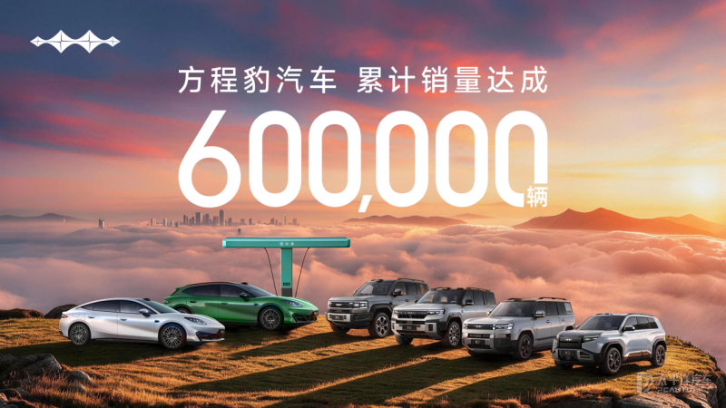
9月全球电动汽车销量同比下降2%
2026年9月，全球电动汽车销量同比下降2%至215万辆，结束了连续六个月的增长势头。尽管欧洲市场销量创下历史新高，但北美和中国市场的明显下滑拖累了整体表现。今年1月至9月，全球电动汽车累计销量约为1,550万辆，同比增长3%。欧洲市场表现突出，9月销量接近60万辆，同比增长39%，创下单月历史新高。中国仍是全球最大的电动汽车市场，但9月销量同比下降18%至111万辆。北美电动汽车销量同比下降44%至13万辆，降幅为今年以来最大。除中国、欧洲和北美以外的其他市场，电动汽车销量继续快速增长，同比增长81%至31万辆。（来源：盖世汽车）
理想i9上市售价36.98万元
9月中旬，理想i9上市，只推一个Home版本，售价36.98万元。理想i9从纯电平台出发，重新设计空间布局和底盘，目标是打造一个能装下全家日常的移动空间。其舱内空间效率达到69.6%，X向空间3639毫米，5225毫米的车长，内部空间反超了不少尺寸更大的车型。理想i9的二排是全尺寸双向零重力旋转座椅，能无极旋转，相当于给后舱装了个开关，二排三排换个组合，车里就变出几种用法。（来源：电动邦）
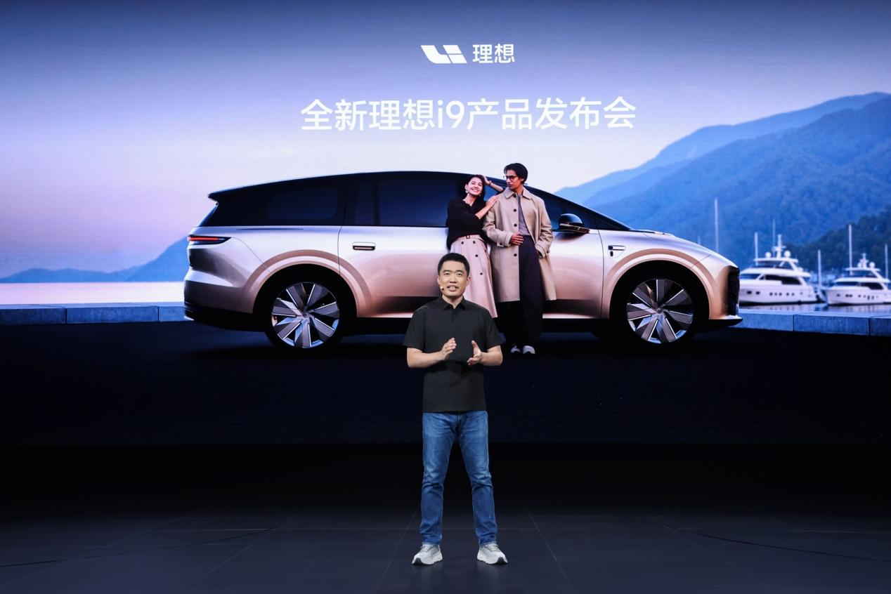
9月新能源汽车销量182.3万辆
2026年9月，新能源汽车销量为182.3万辆，同比增长13.6%。1至9月，新能源汽车累计销量为1247.2万辆，同比增长11.1%。国内市场方面，9月新能源汽车国内销量为125.2万辆，环比增长12%，同比下降9.4%。1至9月，国内销量累计为846.6万辆，同比下降10.6%。出口方面，9月新能源汽车出口57.1万辆，环比增长8.6%，同比增长1.6倍。1至9月，新能源汽车出口累计达到400.6万辆，同比增长1.3倍。（来源：盖世汽车）
四、供应链与智驾
大众安徽ID. Unyx 07售价跌破10万元
大众安徽（由大众与江淮汽车集团合资）近日对ID. Unyx 06和ID. Unyx 07车型进行了更新，并在中国市场大幅降价。其中，ID. Unyx 07成为大众在中国市场首款售价低于100,000元的纯电动车型。此次降价是大众安徽在新能源汽车市场竞争加剧背景下，进一步提升产品竞争力的重要举措。此前，该品牌在华推出的ID系列车型主要面向中高端市场，而此次降价表明其正尝试扩大市场份额，吸引更多价格敏感型消费者。此举也反映出中国新能源汽车市场竞争日益激烈，车企纷纷通过价格调整来应对挑战。（来源：Electrive）
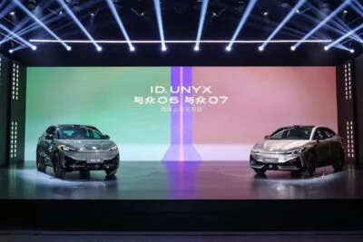
智界RX获L3路测牌照城市快速路实测
9月16日，智界RX正式获得L3级自动驾驶道路测试牌照，将在城市快速路开展公开实测。此次测试选择城市快速路作为主战场，不同于行业多数项目优先选择高速路段进行L3验证，智界RX直接在贴近日常通勤的复杂场景中进行测试，标志着国内高阶自动驾驶正逐步走向普通人真实上下班的道路环境。智界RX已通过海量仿真模拟与封闭场地实车考核，覆盖七大核心场景，包括交通信号识别响应、障碍物识别等。此次测试不仅对感知硬件、预测算法提出更高要求，也意味着国产高阶智驾研发方向正从“能跑”转向“好用、安全、贴合国人通勤”。（来源：太平洋汽车·新闻）
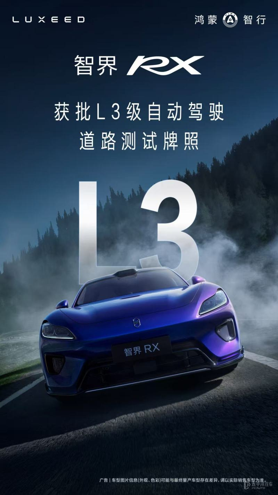
沃尔沃扩大与英伟达自动驾驶合作
沃尔沃近日宣布扩大与英伟达的合作，进一步升级其自动驾驶系统。此次合作将不仅限于其电池电动车型，而是扩展至更广泛的车辆平台。沃尔沃与英伟达的合作已持续近十年，此次升级表明其在自动驾驶领域加大了投入力度。此前，沃尔沃在自动驾驶技术方面已取得一定进展，但此次合作将为其提供更强大的计算能力和更先进的自动驾驶解决方案。此举也反映出汽车行业对自动驾驶技术的重视程度不断提高，尤其是在英伟达等科技巨头的支持下，自动驾驶技术正逐步走向成熟。（来源：TechCrunch·交通）
特斯拉召回107293辆国产Model 3和Model Y
2022年5月23日起，特斯拉（上海）有限公司召回生产日期在2021年10月19日至2022年4月26日期间的部分国产Model 3、Model Y电动汽车，共计107293辆。此次召回原因是车辆在准备直流快速充电时或在直流快速充电期间，信息娱乐系统的中央处理器可能没有充分冷却，导致中央处理器运行速度减慢及中央触摸显示屏显示迟钝，严重时中央处理器可能重启从而造成显示屏无法显示。特斯拉将通过OTA技术为车辆免费升级软件，以缓解中央处理器温度上升问题。此前，特斯拉已多次因类似问题进行召回，此次召回进一步表明特斯拉在车辆软件和硬件的协同管理上仍需持续优化。（来源：太平洋汽车·新闻）
特斯拉北美召回13万辆车因CPU过热
特斯拉将在北美召回13万辆2021至2022年生产的Model 3、Model Y、Model S和Model X车型。召回原因为车辆在快充时娱乐系统处理器可能过热，导致屏幕反应慢或白屏，影响倒车影像、驾驶模式调节以及风挡玻璃能见度等，存在安全隐患。此次召回将通过OTA升级解决，无需车主前往经销商。特斯拉在2022年已在美国市场进行了11次召回，涉及约230万辆车型，其中大部分可通过OTA升级修复。此次召回再次凸显特斯拉在北美市场频繁面临软件和硬件协同问题，也反映出电动车行业在快速充电技术上的挑战。（来源：太平洋汽车·新闻）
美国电动车销量连续三季增长
美国电动车市场连续三个季度实现增长。根据最新数据，美国电动车销量在最近三个季度持续上升，显示出市场对电动车的接受度和需求正在逐步提升。这一趋势与全球范围内对环保和可持续发展的关注密切相关，同时也受到美国政府对电动车行业的政策支持和补贴推动。电动车销量的持续增长表明，消费者对电动车的接受度正在提高，电动车市场正逐步走向成熟。（来源：TechCrunch·交通）
小鹏G9L巴黎车展上市 法国售价74990欧元起
10月12日，小鹏G9L在2026巴黎国际车展正式全球上市，法国市场售价74990欧元起，约合人民币56万元。小鹏集团以‘Physical AI For All’为主题亮相车展，展示了其在物理AI领域的前沿成果，并与特斯拉同台竞技，开放高阶智驾体验。小鹏G9L是小鹏在欧洲投产的第四款车型，实现中国广州与奥地利格拉茨同步生产。小鹏还与米其林签订战略框架协议，并推出‘XPENG AI ENGINEERING’，面向全球新能源汽车伙伴开放技术解决方案。小鹏G9L以‘一车三得’的产品理念，兼顾商务出行、家庭生活与户外探索，满足用户多元需求。新车历经三年研发，在26个国家和地区完成累计674万公里道路测试。小鹏G9L的上市标志着其加速推动物理AI技术创新成果惠及全球用户，并深化欧洲市场布局。（来源：新浪汽车）
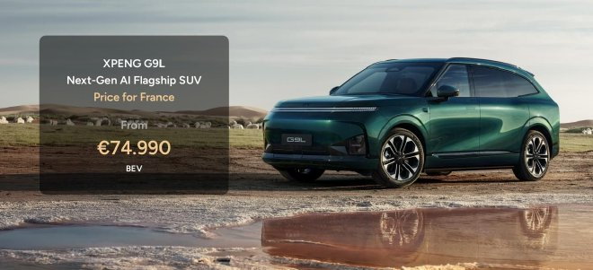
奇瑞旗下Luxeed将获独立生产许可 计划上市
奇瑞旗下华为合作品牌Luxeed计划获得独立生产许可，并有意在未来独立上市。此前，Luxeed依托奇瑞的资源与华为的技术合作，推出多款新能源车型。此次获得独立生产许可，意味着Luxeed将逐步摆脱对奇瑞的依赖，实现自主发展。独立上市将进一步增强Luxeed的市场竞争力，为其未来拓展国际市场奠定基础。（来源：CnEVPost）
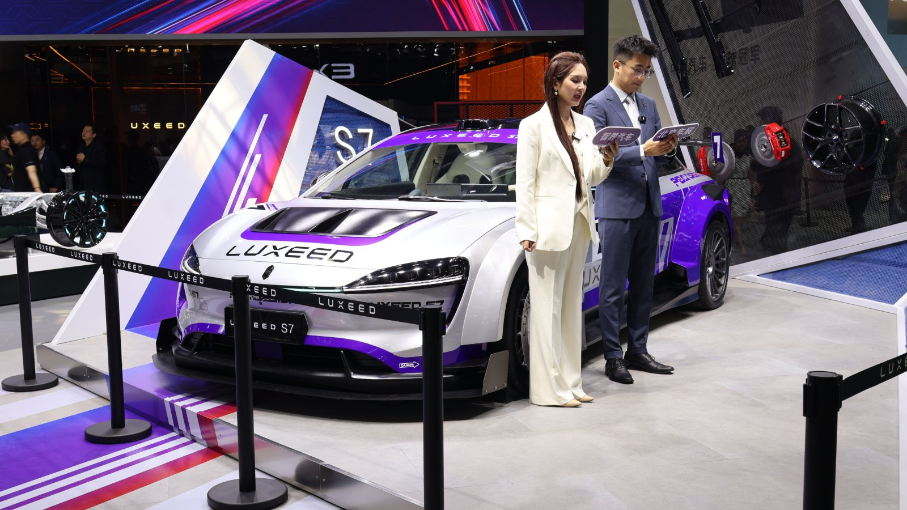
吉利汽车2027下半年将搭载谷歌Gemini等服务
吉利汽车计划于2027年下半年在全球市场搭载谷歌Gemini、Google Maps和Google Play服务。吉利首席技术官沈源透露了这一消息。此前，吉利在智能座舱和车联网领域持续投入，与多家国际科技公司展开合作。此次与谷歌合作，将进一步提升吉利汽车的智能化水平，增强其在海外市场的竞争力。此举意味着吉利正加速推进其全球化战略，为用户提供更丰富的智能出行体验。（来源：CarNewsChina）
五、公司与人事
东风汽车与兵器工业集团签署战略合作框架协议
10月13日，东风汽车集团有限公司与中国兵器工业集团有限公司在武汉签署战略合作框架协议。双方将基于优势互补、互利共赢的原则，深化科技创新、市场拓展、产业链供应链、装备领域及产业金融等多方面的合作，共同推动新质生产力发展。此前，东风汽车与多家企业开展了类似的合作，以增强其在汽车制造和相关产业中的竞争力。此次合作将进一步拓展东风汽车在国内外市场的影响力，并推动其在高端制造领域的布局。（来源：新浪汽车）
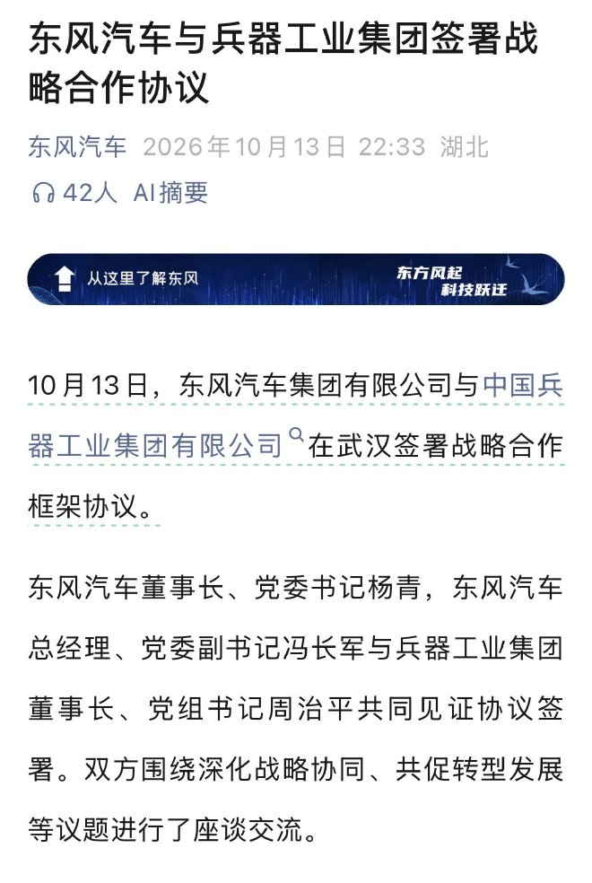
奇瑞考虑收购捷豹，捷豹全球年销量不足1.5万辆
捷豹2025至2026财年全球零售销量仅约1.4万台，品牌面临存续与否的关键路口。奇瑞已与塔塔展开初步沟通，有意收购捷豹品牌。捷豹制定了激进转型战略，全面停掉燃油车，未来新车全部基于JEA专属纯电平台打造，投入预计达20亿至25亿英镑。捷豹的转型策略与当前超豪华市场行业共识存在明显冲突，其全盘押注纯电路线，跳过插混过渡阶段，进一步放大了转型风险。捷豹的翻盘机会被押注在美国市场，全新纯电GT车型Type01预计于2027年在美国交付，若市场反馈不佳，捷豹将持续吞噬集团现金流。（来源：网上车市）

博世创新工场与米链共创达成战略合作
10月12日，博世创新工场与米链共创在中国达成创投孵化战略合作，联合设立“博链共创”创投孵化平台，聚焦远程健康监测和软件驱动的智能制造两大核心领域。博世创新工场是隶属于博世集团的企业创投孵化平台，致力于从零开始孵化初创企业，聚焦硬核科技赛道。米链共创作为产业共创平台，将提供创业辅导、产品战略规划、商业模式优化和供应链资源链接。此次合作将整合双方优势，依托博世的技术储备和米链共创在中国市场的创业项目发掘能力，打造体系化、可规模化的外部创新项目发现与孵化机制。（来源：新浪汽车）
宝马M不追千匹马力，强调性能可重复
10月11日，BMW M公司首席执行官范梅尔在2026 BMW M热血嘉年华期间接受新浪汽车专访时表示，宝马M不追求千匹马力，而是更注重车辆在赛道上的可重复、可控制与精准，以及日常使用的实用性。范梅尔指出，虽然电动车容易获得强大的直线加速能力，但宝马M更关注车辆如何行驶和驾驶者的感受。他透露，纯电M车型将配备四台独立电机，总功率可能超过1000马力，但不会在同一时刻全部达到最大输出。宝马M希望通过四台电机与中央控制系统的协同，实现更精细的动力分配和动态能力。这一策略与当前市场对性能的直观叙事形成差异，宝马M强调的是人车合一的驾驶体验，而非单纯追求马力数字。（来源：新浪汽车）
六、出海与国际
零跑B10西班牙工厂量产
2026年10月16日，零跑B10在西班牙萨拉戈萨工厂正式启动量产，标志着零跑与Stellantis集团的战略合作迎来产业化成果。该工厂拥有43年的汽车制造历史，零跑B10将与欧宝Corsa、标致208和蓝旗亚Ypsilon共同生产。为适应B10的生产需求，零跑与Stellantis集团工程团队共同推进产线适配，并在西班牙马连打造本地化电池组装基地。零跑创始人朱江明表示，西班牙双工厂协同布局是零跑国际化发展的重要节点。2026年以来，零跑连续三个月实现单月销量突破10万辆，在全球新能源汽车品牌中排名第四。这一进展表明零跑在欧洲的本地化制造实现突破，进一步巩固其在国际市场的地位。（来源：盖世汽车）
比亚迪Racco在斯里兰卡售价34615美元
比亚迪Racco kei车在斯里兰卡市场正式上市，起售价为34615美元，这是该车型首次在除日本以外的市场推出。此前，比亚迪Racco主要在日本市场销售，此次进入斯里兰卡标志着比亚迪在国际市场的进一步拓展。作为一款kei车，Racco在设计和性能上可能符合斯里兰卡当地市场的需求。比亚迪近年来在新能源汽车领域持续发力，不断拓展海外市场，此次Racco的推出将进一步增强其在国际市场的竞争力。（来源：CarNewsChina）
奇瑞Omoda 5轴召回引发2024年检测质疑
奇瑞汽车近日宣布在马来西亚召回8,878辆Omoda 5车型，原因是其轴部件存在安全隐患。此次召回与2024年检测及焊接问题有关，但具体原因尚未完全公开。此前，2024年的检测发现部分车辆存在焊接缺陷，但未及时采取措施。此次召回引发了对2024年检测流程和结果的质疑。作为一款面向东南亚市场的车型，Omoda 5的召回可能影响奇瑞在该地区的品牌形象和市场信任度。此次事件也凸显了新能源汽车在质量控制和售后管理方面面临的挑战。（来源：CarNewsChina）
9月我国动力和储能电池产量达237.8GWh
2026年9月，我国动力和储能电池合计产量达到237.8GWh，环比增长0.3%，同比增长57.3%。1至9月，动力和储能电池累计产量为1833.1GWh，累计同比增长63.4%。在销量方面，9月动力和储能电池总销量为222.7GWh，同比增长52.0%。其中，动力电池销量占比67.0%，储能电池占比33.0%。1至9月，动力电池累计销量为1086.4GWh，占总销量的64.6%。储能电池累计销量为595.4GWh，同比增长111.8%。出口方面，9月动力和储能电池合计出口44.0GWh，同比增长64.5%。1至9月累计出口302.9GWh，同比增长51.6%。（来源：盖世汽车）
数据速览
| 指标 | 数值 | 口径/区间 | 来源 |
|---|---|---|---|
| 9月我国动力和储能电池产量 | 237.8GWh | 环比增长0.3%，同比增长57.3% | 中国汽车动力电池产业创新联盟 |
| 蔚来全国充换电站数量 | 9666座 | 单日再上线9座 | 太平洋汽车 |
| 比亚迪第三代秦PLUS轴距 | 2800mm | 带激光雷达 | 太平洋汽车 |
| 小鹏G9L法国市场售价 | 74990欧元起 | 2026巴黎国际车展全球上市 | 新浪汽车 |
| 岚图梦想家9成交均价 | 34万以上 | 进入极氪、雷克萨斯豪华品牌价格带 | 电动邦 |
原文来源
> 本页每条报道的图片均来自该条新闻原文页面；原文没有合格图片的条目不配图。
1. [电动邦] 四部门给“速成车”踩刹车，岚图早已把安全冗余拉到了数倍国标 — https://www.diandongbang.com/news/167896.html
2. [CnEVPost] Nio to launch larger 60-kWh battery pack for Firefly on October 23 — https://cnevpost.com/2026/10/16/nio-launch-60-kwh-battery-pack-firefly-oct-23/
3. [汽车之家] 全新一代比亚迪汉申报图曝光 纯电+插混 尺寸比汉L还大 — https://www.autohome.com.cn/news/202610/1317812.html#pvareaid=102624
4. [太平洋汽车] 比亚迪第三代秦PLUS官图 带激光雷达 轴距2800mm — http://www.pcauto.com.cn/nation/5188/51889985.html?ad=28676
5. [易车] 比亚迪第二代海鸥将于10月20日上市 设计和智能化全面升级 — https://news.yiche.com/info/113864752.html
6. [Electrek] BYD’s new high-tech 5-seat electric SUV revealed with 690 hp and dual 30″ screens — https://electrek.co/2026/10/19/byds-new-high-tech-5-seat-ev-suv-revealed-two-30-screens/
7. [网上车市] 比亚迪新一代汉：纯电+插混都有，大幅加长16厘米！ — http://news.cheshi.com/dujia/20261016/3426060.shtml
8. [太平洋汽车] 阿维塔07L增程版申报信息 搭载1.5T增程系统 — http://www.pcauto.com.cn/nation/5188/51886762.html?ad=28676
9. [新浪汽车·新车] 捷途旅行者7焕新价12.59-16.59万元 — https://auto.sina.com.cn/newcar/2026-10-14/detail-iniveefr8516061.shtml?oaid=00117&c=spr_auto_trackid_4d7d188c9b7a61c4
10. [太平洋汽车] 方程豹累计销量突破60万辆 品牌成交均价22.2万 钛9即将发布 — http://www.pcauto.com.cn/nation/5188/51888972.html?ad=28676
11. [盖世汽车] 9月全球电动汽车销量同比下降2% — https://auto.gasgoo.com/news/202610/19I70475303C101.shtml
12. [电动邦] 如何将六座SUV打造为『移动之家』？理想i9给出了答案 — https://www.diandongbang.com/news/167878.html
13. [盖世汽车] 9月新能源汽车销量182.3万辆 — https://auto.gasgoo.com/news/202610/19I70475168C501.shtml
14. [Electrive] ID. Unyx 06 & 07: updates and drastic price cuts — https://www.electrive.com/2026/10/19/id-unyx-06-07-updates-and-drastic-price-cuts/
15. [太平洋汽车·新闻] 智界RX拿下L3路测牌照 国产高阶智驾迈出关键一步 — https://www.pcauto.com.cn/news/5182/51824510.html
16. [TechCrunch·交通] Volvo makes a bigger bet on Nvidia for hands-free automated driving — https://techcrunch.com/2026/10/15/volvo-makes-a-bigger-bet-on-nvidia/
17. [太平洋汽车·新闻] 特斯拉召回部分国产车型 因快充时存隐患 — https://www.pcauto.com.cn/news/3057/30578587.html
18. [太平洋汽车·新闻] 特斯拉在北美召回13万辆车 因CPU过热导致功能失效 — https://www.pcauto.com.cn/news/3051/30517404.html
19. [TechCrunch·交通] Electric vehicle sales in the US are showing signs of life — https://techcrunch.com/2026/10/14/electric-vehicle-sales-in-the-u-s-are-showing-signs-of-life/
20. [新浪汽车] 小鹏G9L巴黎车展全球上市 法国市场售价74990欧元起 — https://auto.sina.com.cn/news/2026-10-12/detail-iniuytnv5196544.shtml
21. [CnEVPost] Chery's Huawei-backed Luxeed to get independent carmaking license, plans IPO — https://cnevpost.com/2026/10/17/chery-luxeed-carmaking-license-plans-ipo/
22. [CarNewsChina] Geely cars to get Google Gemini, Maps, and Play globally in H2 2027 — https://carnewschina.com/2026/10/16/geely-cars-to-get-google-gemini-maps-and-play-globally-in-h2-2027/
23. [新浪汽车] 东风汽车与兵器工业集团签署战略合作框架协议 — https://auto.sina.com.cn/news/2026-10-14/detail-iniveefm7258339.shtml
24. [网上车市] 奇瑞考虑收购捷豹！Jaguar全球一年销量不到1.5万辆 — http://news.cheshi.com/dujia/20261015/3426052.shtml
25. [新浪汽车] 博世创新工场与米链共创达成战略合作，共建创投孵化平台 — https://auto.sina.com.cn/news/2026-10-14/detail-iniveefp7808305.shtml
26. [新浪汽车] 独家专访宝马M范梅尔：宝马M不追千匹，也不为圈速造车 — https://auto.sina.com.cn/news/2026-10-13/detail-inivawmy0562188.shtml
27. [盖世汽车] 零跑B10西班牙工厂量产 — https://auto.gasgoo.com/news/202610/19I70475250C501.shtml
28. [CarNewsChina] BYD Racco launches in first market outside Japan at 34,615 USD — https://carnewschina.com/2026/10/16/byd-racco-launches-in-first-market-outside-japan-at-34615-usd/
29. [CarNewsChina] Chery’s Omoda 5 axle recall raises questions about the 2024 inspection — https://carnewschina.com/2026/10/16/cherys-omoda-5-axle-recall-raises-questions-about-the-2024-inspection/
30. [盖世汽车] 9月我国动力和储能电池产量达237.8GWh — https://auto.gasgoo.com/news/202610/19I70475161C501.shtml
31. [CnEVPost] Nio's third-gen ES8 nears 160,000 deliveries about a month after last milestone — https://cnevpost.com/2026/10/19/nio-160000th-3rd-gen-es8-this-week/
32. [新浪汽车·新车] 9.99万起 新款大众安徽与众06/07上市 — https://auto.sina.com.cn/newcar/x/2026-10-17/detail-inivpwwh1308679.shtml?oaid=00112&c=spr_auto_trackid_4d7d188c9b7a61c4
33. [网上车市] 奕境X9纯电标配宁德时代电池，预计11月正式亮相！ — http://news.cheshi.com/dujia/20261016/3426061.shtml
34. [新浪汽车·新车] 北京现代全新伊兰特 申报信息曝光 — https://auto.sina.com.cn/newcar/2026-10-16/detail-inivmprk1655941.shtml?oaid=00114&c=spr_auto_trackid_4d7d188c9b7a61c4
35. [汽车之家] 可选装激光雷达 配备掀背尾门 大众ID. AURA L5申报信息曝光 — https://www.autohome.com.cn/news/202610/1317821.html#pvareaid=102624
36. [网上车市] 新阿维塔06上市：全面涨价！增程权益后20.59万起！ — http://news.cheshi.com/dujia/20261015/3426048.shtml
37. [太平洋汽车] 轴距加长50毫米 一汽‑大众探歌L申报信息 — http://www.pcauto.com.cn/nation/5188/51886760.html?ad=28676
38. [新浪汽车·新车] 吉利星瑞L PLUS 限时10.97-14.37万元 — https://auto.sina.com.cn/newcar/2026-10-17/detail-inivqcee1297454.shtml?oaid=00113&c=spr_auto_trackid_4d7d188c9b7a61c4
39. [易车] 阿维塔06焕新上市 限时权益价20.59万起 — https://news.yiche.com/info/113894481.html
40. [汽车之家] 售25.98万起 智界RX将于10月25日开启首批车主交付 — https://www.autohome.com.cn/news/202610/1317841.html#pvareaid=102624